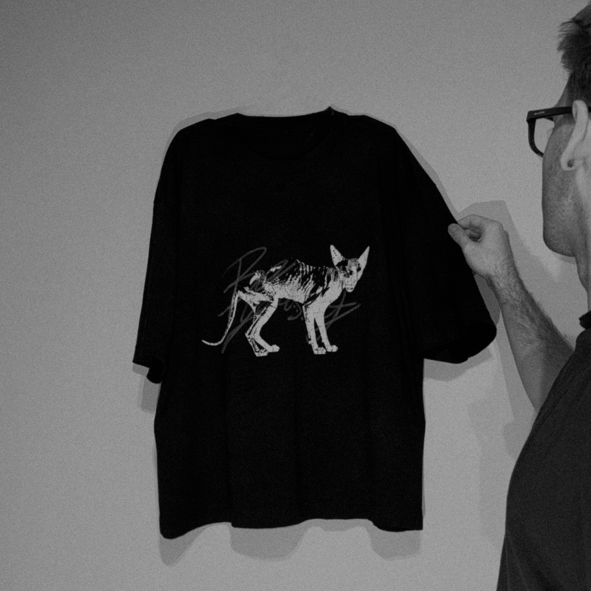

I have been working on graphics since 2018. Over the years, I have been quietly gaining experience, testing various printing houses and different materials to see what truly holds up. It was a long process of trial and error, but it allowed me to understand exactly what I want to represent.
Now, I am taking 3ULT seriously. I am dedicating all my free time to this project because it is where I find my true fulfillment. This brand exists as a way to express myself and to draw attention to dark, detailed graphics that are the result of hours of refinement.
The logo—three dots placed side by side—is a symbol that has followed me throughout my life. To me, the number three represents balance. This detail is integrated into everything I do: from the hand-sewn tags on every garment to the subtle elements woven into the graphics themselves.